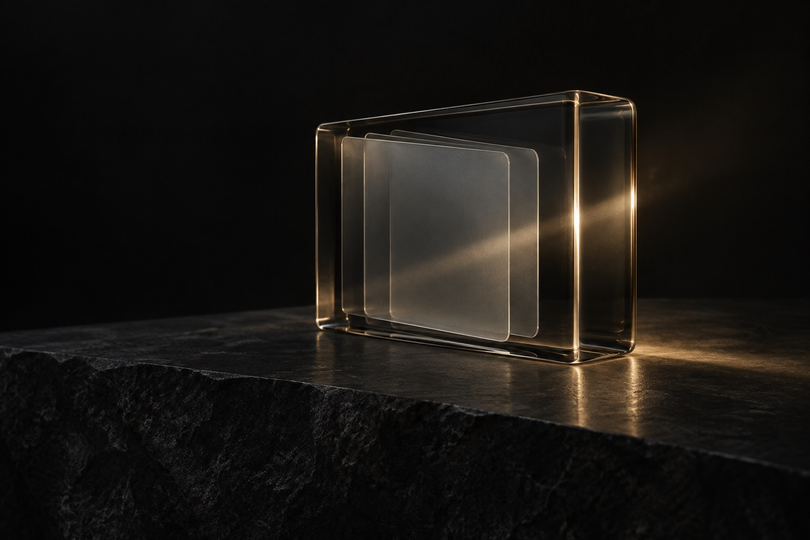
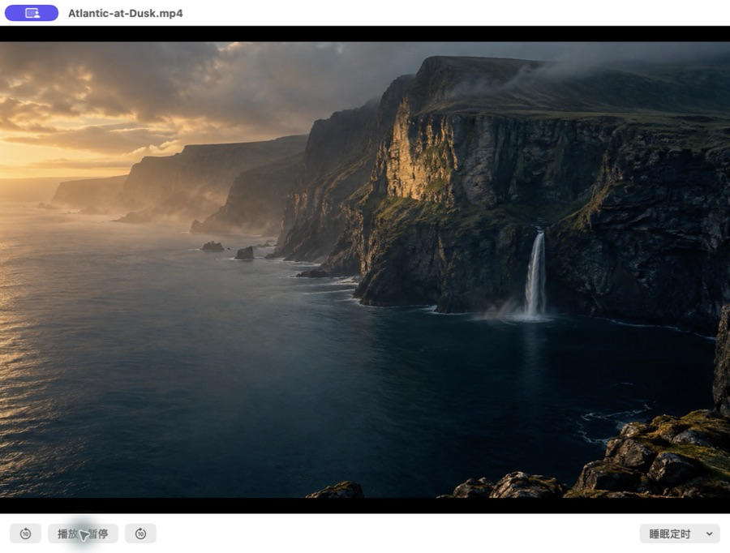
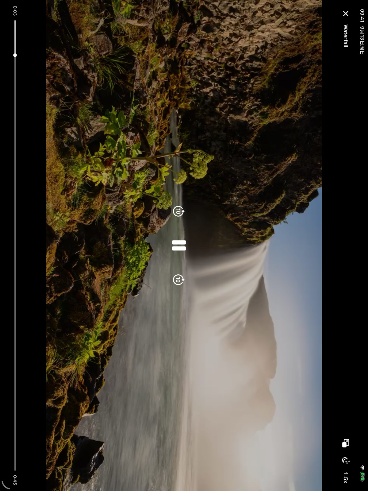

Watch at your own pace
Seek forward or back, adjust playback speed, and set a sleep timer for a more personal viewing experience.
Screening Room protects and plays private videos on iPhone and iPad.
Encrypt in place. Watch directly. Keep the folders you know.
iPhone & iPad · Mac submitted for review
No need to import your media into another private library. Add protection right where your files already live.

Play encrypted video directly, without first exporting a full decrypted copy. Playback speed and a sleep timer keep the experience yours.

Seek forward or back, adjust playback speed, and set a sleep timer for a more personal viewing experience.
Read video and encrypted files on demand. Keep offline copies to continue watching without a connection.
Open encrypted photos and PDFs. Zoom into the details and return to your reading.

Watch on iPhone. Browse with a spacious sidebar and adaptive grid on iPad. A native Mac experience brings local folders, external storage and OneDrive within reach.
Mac version 1.2.1 was submitted for review on September 22, 2026; release is not yet confirmed. Check the App Store for platform availability.
Start free. Upgrade once when your collection needs more registered entries.
Begin with your first favorites.
One purchase. More to treasure.
Entry counting follows the explanation in each platform’s app. Local Pro pricing is shown in the App Store.
No. Screening Room does not store your files on developer-operated servers. OneDrive is optional; files move between your device and your own cloud storage.
No. Encryption creates an .efl file and keeps the original. Check that the encrypted file opens correctly before deciding whether to remove the original.
Keep your recovery code or recovery file somewhere safe. The app offers a recovery flow and optional iCloud backup for recovery information, which is distinct from your media files.
On iPhone and iPad, use compatible locations in the Files app, including local storage, iCloud Drive and compatible third-party providers. Mac supports local, external and compatible mounted storage. Both offer optional OneDrive connections.
No. Pro is a one-time purchase that removes quantity limits. Viewing, decryption and export of existing files are not withheld if you do not purchase Pro.